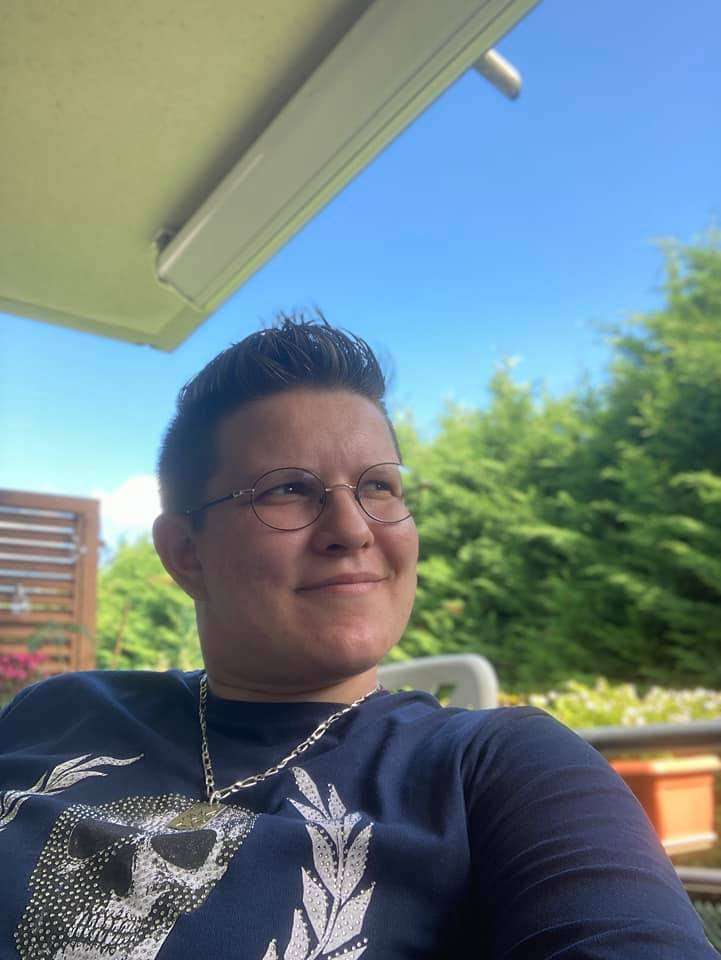
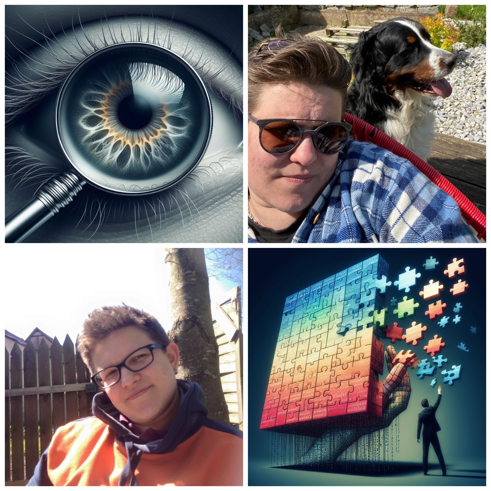

Embarquez pour un voyage à travers mon apprentissage du numérique. Mon portefolio capture l'évolution de mes compétences, des premiers projets aux réalisations actuelles.
Je suis Jennifer, une passionnée de technologie et de créativité. Anciennement dans l'optique-lunetterie, j'ai récemment plongé dans le monde du développement web. Explorez avec moi cette fusion entre précision technique et imagination débridée. Suivez mes projets et découvertes, et rejoignez-moi dans cette aventure où la passion rencontre le code. 🚀

Que ce soit pour discuter de projets passionnants, partager des idées ou simplement dire bonjour, je suis toujours ravie de connecter avec de nouvelles personnes. N'hésitez pas à m'envoyer un message et je vous répondrai dès que possible.